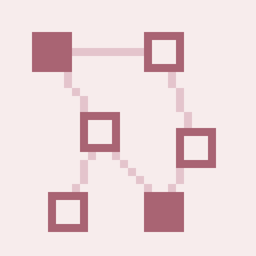
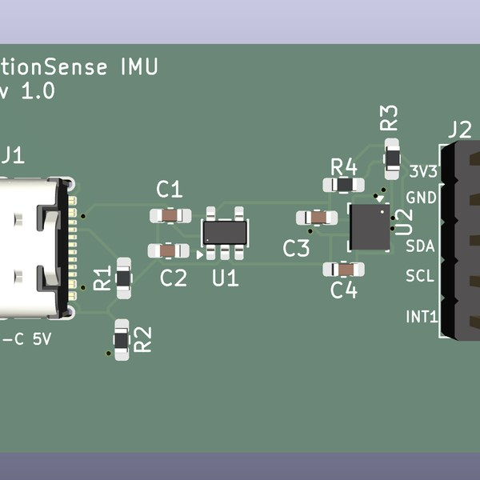
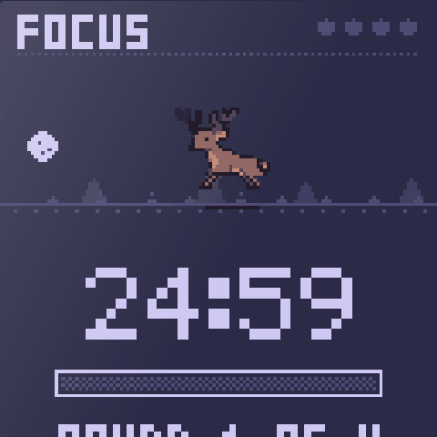
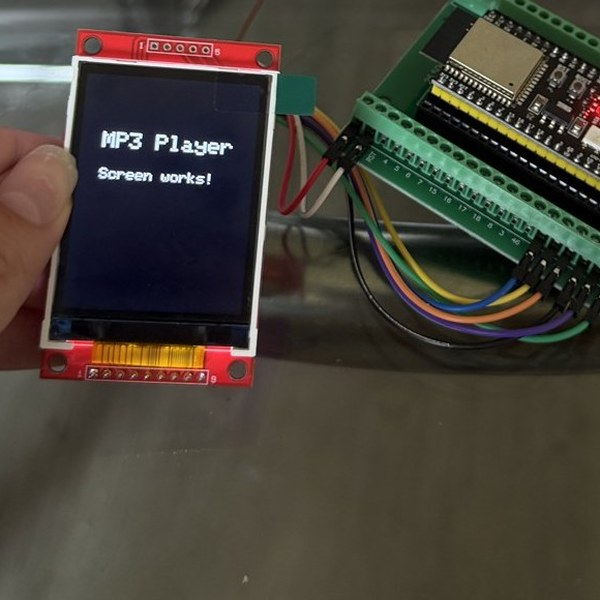
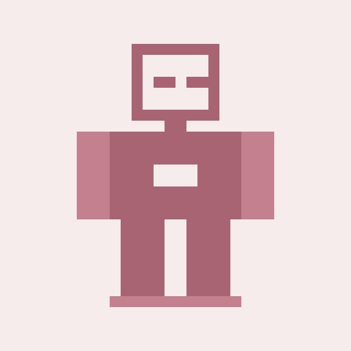
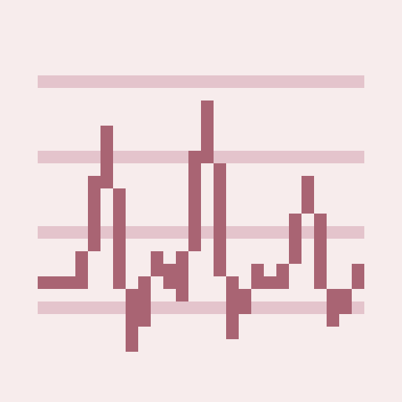

ask the bunny
ask the bunny
hi, i'm the bunny. i answer questions about bella. pick one 🐾
EE + CS junior at the University of Miami. I like building things, from circuit boards to planners to small apps.
I'm a double major in electrical engineering and computer science, with a math minor. I like problems that sit between the two: a board that needs a driver, a task that needs a planner, a model that has to run on a chip with 512 KB of RAM.
Before UM I did my A.A. at Broward College, then transferred on a President's Scholarship. Along the way I spent a year at Safra National Bank (IT help desk, then their BI dashboards) and a summer doing brain-machine interface research, which is where I first got to work with real signals from real hardware.
Right now I'm a researcher at UM's Robotics & Mechatronics Lab, where I write the task planner for our BEHAVIOR Challenge 2026 entry and help run the build of an open-source humanoid. I'm interested in embedded systems, AI, and the places where software meets the physical world.
Things I use a lot:

The symbolic planning layer for our lab's entry. I wrote the compiler from BDDL task specs to PDDL, defined the predicates and operators, and connected it to Fast Downward. All 100 benchmark tasks produce a plan, with a CI check to keep it that way.

My first board from scratch: a 6-axis IMU on a two-layer USB-C board, schematic through fab files. Five bare PCBs and two assembled ones are on their way from JLCPCB. Next step is bring-up: check the 3.3 V rail, find it on I²C at 0x6A, write the driver.

A pomodoro timer that looks like a tiny handheld. The canvas is 128×160, the same as a real ST7735 display, so it could run on one someday. Hand-drawn bitmap font, and a deer that runs while you work and sleeps when you stop.

A music player built from modules: ESP32-S3, a small display, a DAC, microSD, a battery. So far the SD card reads, audio plays over I2S, and the screen works (after a software-SPI workaround). Case and UI are next.

An open-source humanoid we're assembling at the lab. I joined halfway through and inherited two spreadsheets that disagreed about what had been built and bought, so I built one tracker that was actually true. That's how we found out the motors for 12 of the 22 actuators had never been ordered.

Signal processing for EEG recordings from a behavioral study, from a summer in a brain-machine interface lab. Presented at the Pillars Conference.
If you're working on something interesting, or just want to say hello, send me an email. I reply.
ask the bunny